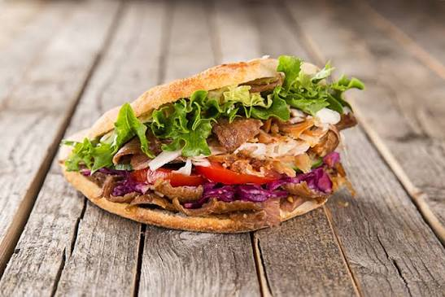

Döner Rezept

Zutaten
| Zutat |
Menge |
| Fladenbrot |
1 Stück |
| Hähnchenfleisch |
200 g |
| Salat |
100 g |
| Tomaten |
2 Stück |
| Zwiebel |
1 Stück |
| Gurke |
1 Stück |
| Joghurtsoße |
3 EL |
Zubereitung
- Das Hähnchenfleisch in kleine Stücke schneiden.
- Das Fleisch mit Salz und Pfeffer würzen.
- Das Fleisch in einer Pfanne gut durchbraten.
- Salat, Tomaten, Gurke und Zwiebel schneiden.
- Das Fladenbrot aufschneiden und kurz erwärmen.
- Das Fleisch und das Gemüse in das Brot geben.
- Joghurtsoße darüber geben.
- Den Döner zusammenklappen und servieren.
Afiyet olsun!